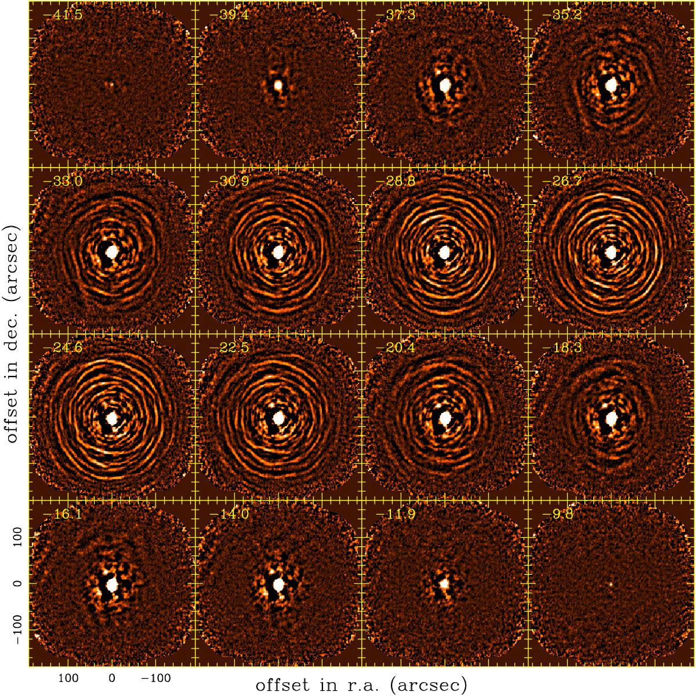
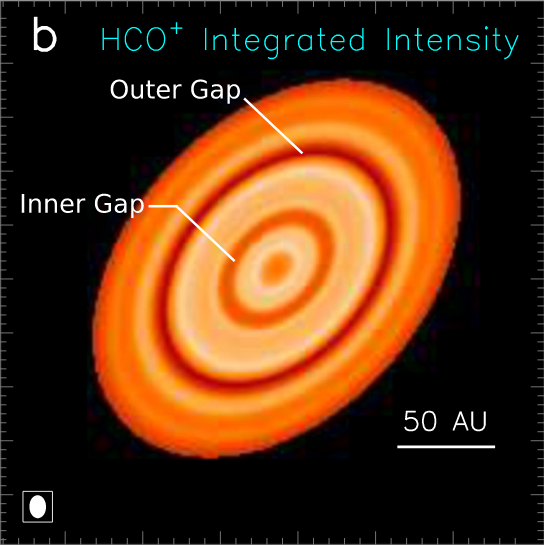
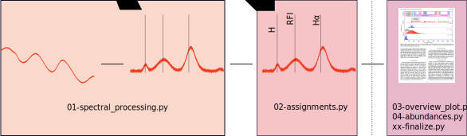
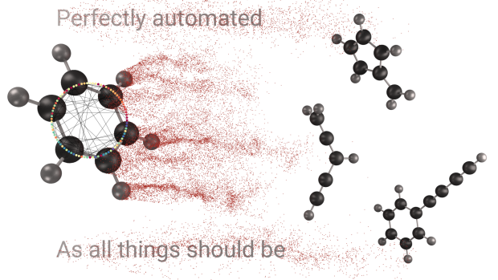
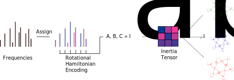
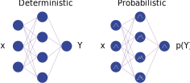
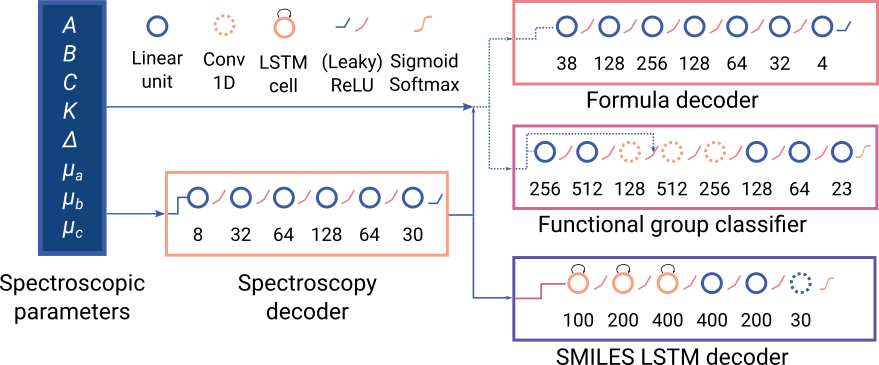
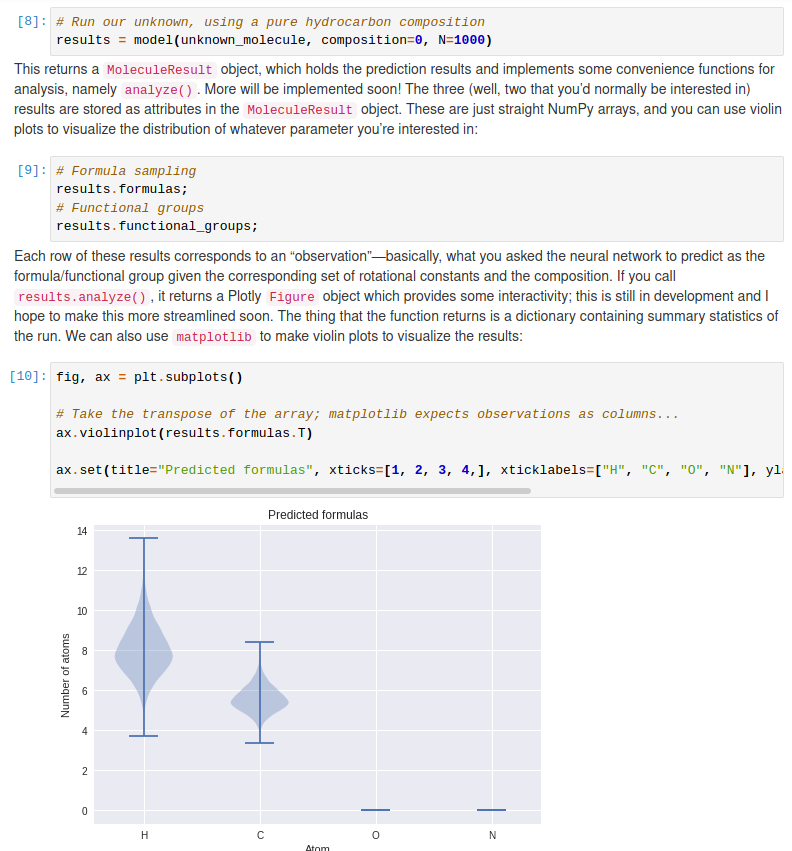
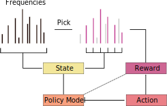
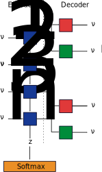

<!DOCTYPE html>
<html lang="en">
  <head>
    <meta charset="utf-8" />
    <meta name="viewport" content="width=device-width, initial-scale=1.0, maximum-scale=1.0, user-scalable=no" />

    <title>PySpecTools</title>
    <link rel="stylesheet" href="./css/reveal.css" />
    <link rel="stylesheet" href="./_assets/css/dark-chique.css" id="theme" />
    <link rel="stylesheet" href="./css/highlight/atom-one-dark-reasonable.css" />
    <link rel="stylesheet" href="./css/print/paper.css" type="text/css" media="print" />

  </head>
  <body>
    <div class="reveal">
      <div class="slides"><section  data-markdown><script type="text/template">

<!-- .slide: data-background-video="figures/RingSpace.mp4" data-background-video-loop="true" -->

# `PySpecTools`

## Pythonic and Deep Learning Workflows for Spectroscopy

### _Kelvin Lee_, Alexander MacLeod, Michael C. McCarthy

<div class="footer">
    
    
</div>
</script></section><section ><section data-markdown><script type="text/template">
<!-- .slide: data-background="https://cdn.eso.org/images/screen/alma-jfs-2010-10.jpg" -->

# Radio Astronomy

<div id="left">

- Observations at radio wavelengths ($\lambda$~submm‒metre)
- Transparent to absorption by interstellar dust
- Powerful inteferometry; high bandwidth, spatial, and spectral resolution
- Wide-range of phenomena: hydrogen spin-flip, charged-particles, molecule rotation

</div>

<footer>
    <p>Credit: ESO/ALMA/NRAO</p>
</footer>
</script></section><section data-markdown><script type="text/template">
<div class="column">
    <p>Black Hole Imaging</p>
    
    <figcaption>Credit: EHT/NSF/ALMA/SMA/IRAM/JCMT/LMT/SMT</figcaption>
</div>

<div class="column">
    <p>Circumstellar Shells</p>
    
    <figcaption>DOI: <a href="https://www.aanda.org/articles/aa/abs/2018/02/aa31619-17/aa31619-17.html">10.1051/0004-6361/201731619 <a> </figcaption>
</div>

<div class="column">
    <p>Protoplanetary Discs</p>
    
    <figcaption>DOI: <a href="https://iopscience.iop.org/article/10.3847/2041-8205/820/2/L25">10.3847/2041-8205/820/2/L25</a></figcaption>
</div>
</script></section><section data-markdown><script type="text/template">
# Typical workflow


</script></section><section data-markdown><script type="text/template">
# Radio Molecular Astrophysics

<div id="left">

- Molecules reveal physical and chemical properties of space.
    - Gas temperature, density, and velocity
- Microscopic understanding of macroscopic processes;
    - Stellar evolution, planet formation, atmospheres, origins of life
- Spectra don't come with labels!
    - Match frequencies with literature data
- Exsaperated by increased data rates
    - Increased bandwidth and resolution = more data
    - wSMA upgrade promises 64 GHz of instantenous on-sky bandwidth
</div>

<div id="right">

<figure>
    <!-- <embed id="sgrb2" type="text/html" src="data/sgrb2.html" width=820 height=620 class="inverted"> -->
    
    <figcaption> <a href="https://ui.adsabs.harvard.edu/abs/2013yCat..35590047B/abstract" <em style="font-size: tiny"> Sgr B2(N) observations with IRAM 30m; Belloche+ 2013</em> </a></figcaption>
</figure>

</div>
</script></section><section data-markdown><script type="text/template">
<div style="justify-content: center">

<figure>


<figcaption><a href="">Full instantaneous bandwidth for wSMA</a></figcaption>

</figure>

<div class="fragment" style="padding-left: 40px">


<figcaption>Every step should be reproducible and accountable!</figcaption>

</div>
</script></section></section><section ><section data-markdown><script type="text/template">
# Enter PySpecTools

<div id="left">


</div>

<div id="right">

Open-source, Pythonic workflow for assigning broadband spectra

<div class="fragment">

1. Familiar abstraction for spectrocopists, chemists, and astronomers

</div>

<div class="fragment">

2. Encourage reproducible and collaborative spectroscopic analysis

</div>

<div class="fragment">

3. Improve information extraction and automation with deep learning models

</div>

<div class="fragment">

<a>Improve analysis rate (months to hours)</a>

</div>

</div>
</script></section><section data-markdown><script type="text/template">
# Core Components

<div id="left">

Implementation uses three core abstractions:

1. `AssignmentSession`
    - Metadata, frequency/intensity/automation control
2. `Transition`
    - Low-level representation of peaks and catalog entries
3. `LineList`
    - Collections of `Transition` objects

</div>

<pre><code class="language-python" style="max-width: 40%">from pyspectools.spectra import assignment

# Load in spectrum and set metadata
session = assignment.AssignmentSession(...)

# Perform preprocessing and peak detection
session.find_peaks(...)

# Load in an external list of frequencies
molecule = assignment.LineList.from_catalog(...)

# Make assignments
session.process_linelist(molecule)

# Generate report
session.finalize_assignments()
</code></pre>
</script></section><section data-markdown><script type="text/template">
# `Transition`

<div id="left">

Low level representation of any spectral feature:

- Peaks
- Catalog entries

</div>

<div id="right">

Stores (meta)data as object attributes:

1. Line frequency/intensity
2. Source (which experiment/observation/catalog/publication?)
3. Unidentified?

<div class="fragment">

If molecular,

1. Name/formula/SMILES
2. Quantum numbers, state energies

</div>

</div>
</script></section><section data-markdown><script type="text/template">
# `AssignmentSession`

High-level interface for users to load and interact with spectral data

Stores spectra as <a href="https://pandas.pydata.org/">`pandas.DataFrame`</a>: handles parsing, manipulation, and serialization

```python
AssignmentSession.from_csv(...).data
```

<div class="fragment">

Digital signal processing interface with <a href="https://docs.scipy.org/doc/scipy/reference/signal.html">`scipy.signal`</a> and custom window functions:

<pre><code class="language-python">session.apply_filter("hanning")</code></pre>

Baseline and peak detection through custom routines and <a href="https://peakutils.readthedocs.io/en/latest/">`peakutils`</a>:

<pre><code class="language-python"># Find all peaks 5 sigma above baseline; use asymmetric least-squares
session.find_peaks(sigma=5., als=True)
</code></pre>

</div>

<div class="fragment">

Interactive viewing within notebook environments with <a href="https://plotly.com/">Plotly</a>:

<pre><code class="language-python">session.plot_spectrum()
</code></pre>

</div>

<div class="fragment">

Serialize analysis with <a href="https://joblib.readthedocs.io/en/latest/persistence.html">`joblib` pickle</a>:

<pre><code class="language-python">session.save_session()
</code></pre>

</div>
</script></section><section data-markdown><script type="text/template">
# `LineList`

Collection of `Transition` objects originating from a single source

Creation from a variety of different standard sources:

<pre><code class="language-python">molecule = LineList.from_catalog(...)
molecule = LineList.from_pgopher(...)
# Online database through `astroquery` API
molecule = LineList.from_splatalogue_query(...)
</code></pre>

<div class="fragment">

Make assignments using a single `LineList`:

<pre><code class="language-python">session.process_linelist(molecule)
</code></pre>

</div>

<div class="fragment">

Or automate creation and assignment with YAML:
<pre><code class="language-yaml">formaldehyde:
    formula: h2co
    filepath: catalogs/v0_h2co.cat             # static data
    source: muller_2017                       # bibtex citation
    smiles: C=O                               # unique identification
</code></pre>

<pre><code class="language-python">session.process_linelist_batch("batch_catalog.yml")
</code></pre>

</div>
</script></section><section data-markdown><script type="text/template">
# `PySpecTools` workflow

Modular/pipeline analysis; separate analysis into multiple scripts/notebooks centred around serialized `AssignmentSession`



<div class="fragment">

<a href="https://">Easy data products for sharing on platforms like Zenodo</a>

<a href="https://papermill.readthedocs.io/en/latest/">Automate sequential analysis with `papermill`</a>

</div>
</script></section><section data-markdown><script type="text/template">
# Automated report generation

Static, data-driven HTML document through `jinja`, `plotly`, and `DataTables`

<embed type="text/html" src="figures/5000-summary.html" style="width: 80%" height=600 class="inverted">

<a>Easy collaborative analysis: everyone has a browser, not everyone knows Python!</a>
</script></section><section data-markdown><script type="text/template">

# Products with `PySpecTools`

Used extensively in laboratory analogues of interstellar chemistry:

<div id="left">

<figure>



</figure>

</div>

<div id="right">

<a href="https://pubs.acs.org/doi/10.1021/acs.jpclett.9b00586">Study of Benzene Fragmentation, Isomerization, and Growth</a> 

Lee & McCarthy, <em> J. Phys. Chem. Lett.</em> 2019

<a href="https://pubs.acs.org/doi/abs/10.1021/acs.jpca.0c02919">Exhaustive Product Analysis of Three Benzene Discharges</a>

McCarthy _et al._, _J. Phys. Chem. A._ 2020

__Over two hundred new molecules discovered in the last year!__

<a href="https://zenodo.org/record/3739468" class="pop"> Version tracking with Zenodo with citable DOI </a>

</div>
</script></section></section><section ><section data-markdown><script type="text/template">
# Deep Learning in Spectroscopy


`PySpecTools` provides tools for identifiable signals—what about unknown ones?



<div class="fragment">

1. Which frequencies form a set?
2. What is the molecular identity of a set?

</div>
</script></section><section data-markdown><script type="text/template">
# Probabilistic deep learning

<div id="left">

Deep neural networks as universal function approximators

Deterministic model provide maximum likelihood estimate; maybe not the most appropriate

<div class="fragment">

Probabilistic models return a _distribution_ of possible answers weighted by likelihood

Uncertainty crucial for decision making and information extraction

</div>

<div class="fragment">

<hr>

Given the data...

_...how likely is my molecule A, instead of B?_

_...how likely does a set of frequencies belong to one molecule?_

</div>

</div>

<div id="right">



</div>
</script></section><section data-markdown><script type="text/template">
# Molecule detective

Probabilistic model decodes spectroscopic parameters into identifying features

Multilayer perceptron using dropouts as an approximation to Bayesian sampling

<div id="left">

<figure>

<figcaption>Trained on 83,000 small, organic molecules based on quantum chemistry data</figcaption>
</figure>

<div class="fragment">

Training data uncertainty used as augmentation strategy

</div>

</div>

<div id="right" class="fragment">


<figcaption>DOI: <a href="https://pubs.acs.org/doi/10.1021/acs.jpca.0c01376">10.1021/acs.jpca.0c01376 </figcaption>

</div>
</script></section><section data-markdown><script type="text/template">
# `PySpecTools` implementation

<div id="left">



</div>

<div id="right">

- Variational model weights included in the latest version of `PySpecTools`
- High-level interface — no deep learning knowledge necessary
- Example notebook available <a style="color: #000000" href="https://laserkelvin.github.io/pyspectools">in the docs!</a>

</div>
</script></section><section data-markdown><script type="text/template">
# Spectroscopic models

Finding likely sets of frequencies from forests of lines

<div id="left">

<div class="fragment">

$ {^{200}P_6} = $ 59 trillion possible permutations

$ {^{250}P_6} = $ 230 trillion possible permutations

</div>

</div>

<div id="right">

<div class="fragment">

<a> Brute-force search over the full space is intractable and misleading</a>

- Scales poorly with number of frequencies
- No estimation of uncertainty: good sets just as likely as unphysical ones
- Spectroscopists use intuition and pattern recognition to find sets

</div>

<div class="fragment">

<p class="pop" style="max-width:90%">
Use deep reinforcement learning to automate "intelligent" search
</p>

</div>

</div>
</script></section><section data-markdown><script type="text/template">
# Searching for sets

<div id="left">



</div>

<div id="right">

- Deep learning framework for self/semi-supervised spectroscopy solver
    - Parameterized state and policy models
- Work in progress!
    - ✅ Encoder model
    - 🚧 Policy model
    - 🚧 Open-source "Gym" environment for spectroscopy RL

</div>
</script></section></section><section  data-markdown><script type="text/template">
# Final remarks

<div id="left">

- `PySpecTools` as an open-source toolkit for analyzing laboratory and astronomical spectra
- Automated and reproducible workflow for hundreds to thousands of spectral features
- Continually improving capabilities, particularly automation by deep learning
- Extension to other wavelengths (infrared/optical spectra)
- Contributions welcome!

</div>

<div id="right">


</div>
</script></section><section  data-markdown><script type="text/template">
# Ackowledgements

<div class="l-multiple">
    <div class="img-frame">
        
        <span>80NSSC18K0396</span>
    </div>
    <div class="img-frame">
        
        <span>AST-1908576</span>
    </div>
</div>

<hr style="margin: 30px">


<div style="align-content: center; padding-top: 100px">

<a class="pop" style="width: 60%">
The entire open-source community!
</a>

</div>
</script></section><section  data-markdown><script type="text/template">
<!-- .slide: data-background-video="figures/RingSpace.mp4" data-background-video-loop="true" -->

<div class="grid sidebar">
    <h1> Thank you! </h1>
</div>

<div class="l-multiple">
    <div class="img-frame">
        
        <span>@cmmmsubmm</span>
    </div>
    <div class="img-frame">
        
        <span>laserkelvin.github.io</span>
    </div>
    <div class="img-frame">
      
      <span>@laserkelvin</span>
    </div>
</div>

<footer>

Slides at https://laserkelvin.github.io/scipy-2020 — Copyright © 2020 Kelvin Lee

</footer>
</script></section><section ><section data-markdown><script type="text/template">
# Supplementary slides
</script></section><section data-markdown><script type="text/template">
# Spectroscopic models

<div id="left">

Spectral features correspond to transitions between quantum mechanical states represented by a Hamiltonian

Recurrent encoder compresses ordered sequences of frequencies into an encoding vector $z$:

$$ z_n \vert \nu_n, \nu_{n-1},\ldots \nu_1, \nu_2 $$

<div class="fragment">

Trained against three losses:

1. Reconstruction loss ($\nu_n \rightarrow z \rightarrow \nu_n$)
2. Prediction loss ($\nu_n \rightarrow z \rightarrow \nu_{n+1}$)
3. Softmax classification loss ($a,b,c$-type spectra)

</div>

</div>

<div id="right">



</div>
</script></section><section data-markdown><script type="text/template">
# Encoding spectra

<div id="left">

Trained on 2 million rotational spectra:

- ~99% accuracy ($F_1$ score) in spectral type classification
- 0.2% mean-squared reconstruction error
- 0.4% mean-squared prediction error

<div class="fragment">

Not accurate enough to replace physical models; good enough for machine learning!

</div>

<div class="fragment">

Discriminator model distinguishes random versus molecular sequences with 94% accuracy

</div>

</div>

<div id="right">

<figure>


<figcaption>UMAP visualization of $\nu$ and embeddings</figcaption>

</figure>

</div></script></section></section></div>
    </div>

    <script src="./lib/js/head.min.js"></script>
    <script src="./js/reveal.js"></script>

    <script>
      function extend() {
        var target = {};
        for (var i = 0; i < arguments.length; i++) {
          var source = arguments[i];
          for (var key in source) {
            if (source.hasOwnProperty(key)) {
              target[key] = source[key];
            }
          }
        }
        return target;
      }
      // Optional libraries used to extend on reveal.js
      var deps = [
        { src: './lib/js/classList.js', condition: function() { return !document.body.classList; } },
        { src: './plugin/markdown/marked.js', condition: function() { return !!document.querySelector('[data-markdown]'); } },
        { src: './plugin/markdown/markdown.js', condition: function() { return !!document.querySelector('[data-markdown]'); } },
        { src: './plugin/highlight/highlight.js', async: true, callback: function() { hljs.initHighlightingOnLoad(); } },
        { src: './plugin/zoom-js/zoom.js', async: true },
        { src: './plugin/notes/notes.js', async: true },
        { src: './plugin/math/math.js', async: true },
      ];
      // default options to init reveal.js
      var defaultOptions = {
        controls: true,
        progress: true,
        history: true,
        center: true,
        transition: 'default', // none/fade/slide/convex/concave/zoom
        dependencies: deps
      };
      // options from URL query string
      var queryOptions = Reveal.getQueryHash() || {};
      var options = extend(defaultOptions, {"transition":"fade","transition-speed":"fast","width":"100%","height":"100%","center":false,"margin":0,"minScale":1,"maxScale":1,"symbolperslideprogress":{"position":"left","align":"vertical","symbolColor":"","symbolActiveColor":""},"menu":{"side":"left","width":"normal"},"tableofcontents":{"title":"","position":2,"titleTag":"h1","titleTagSelector":"h1, h2, h3","ignoreFirstSlide":true}}, queryOptions);
    </script>

    <script src="./_assets/plugins/highlight.min.js"></script>

    <script>
      Reveal.initialize(options);
    </script>
  </body>
</html>
